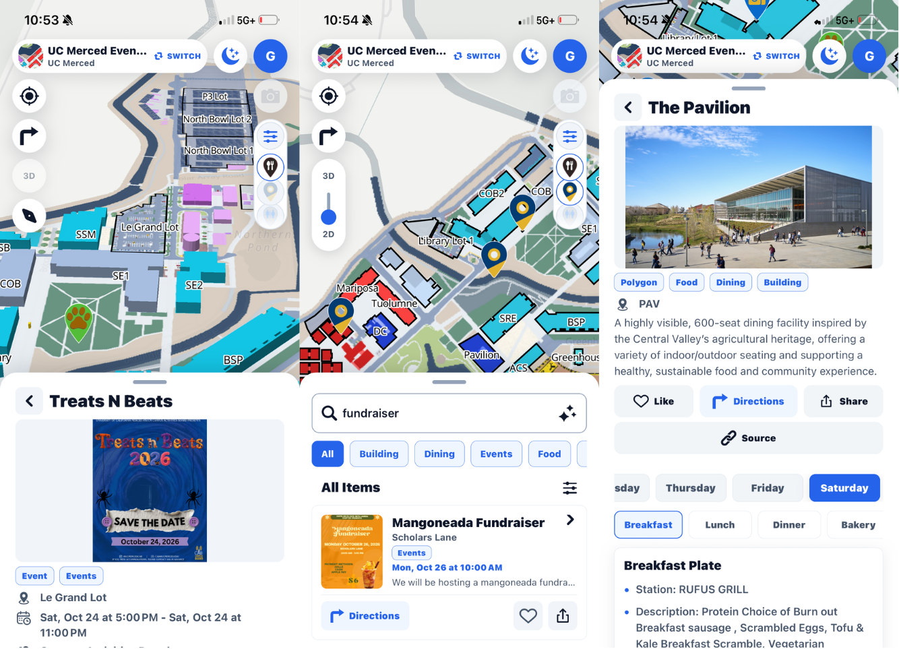

45 minutes
Basic HTML + JavaScript
No GIS experience needed
Presented by
Flavio Herrera
· GIS Center, UC Merced
Your goal for the next 45 minutes
Identify the parts of a web map, find them in the code, and add a campus location with a descriptive popup. Bring a laptop, Wi-Fi, a modern browser, and a code editor.
Meet GIS →
A working map and the questions it can answer.
A
geographic information system (GIS)
connects locations with information so we can explore patterns and relationships. Which trees grow near a building? Where are restaurants? How does shade move across campus?
GIS grew from mapmaking and spatial analysis into digital systems for storing, analyzing, and sharing location data. Today, a web browser can be the front door to that information.
Esri’s introduction to GIS ↗
Live demonstration · Try a tree
Open the completed campus map
. Drag to pan, zoom in, and click a green tree symbol. Notice how a location and a row of data become one interactive feature.
One dataset, many questions.
This existing analysis illustrates nearby tree diversity. Today’s tutorial builds a point map of the tree records, rather than reproducing this analysis.
3–7 minutes · Find your inspiration
What can you do with GIS?
Combine location data with programming, imagery, and analysis to build tools people can use.
GIS programming: from records to a useful tool
A map application combines geometry, data, and interaction. This Merced food map brings restaurant locations and metrics into an explorable interface: the same layer-and-popup pattern we’ll use today.
Buildings, sun, and shade
Spatial modeling can help us ask where building shadows fall.

GIS on the go
Campus maps can put location-based information in a mobile interface.
Digital twins: a place, represented digitally
A digital twin is a digital representation connected to information about a real place or system. It can support questions about buildings, infrastructure, and change over time. See
Esri’s digital-twin overview
.
The GIS Center’s SSI project,
“Exploring Machine Learning-Assisted UAS Mapping for a Campus Digital Twin,”
is an effort exploring campus digital-twin workflows using uncrewed aircraft system (UAS) mapping.
Optional · Where Gaussian splatting fits
3D Gaussian splatting
represents a scene using many small, overlapping 3D Gaussian primitives, optimized from images to render novel views. Think of it as one approach to viewing a captured place from new angles. A visual reconstruction alone is not a complete digital twin, and compatibility depends on the tools and workflow.
Read the original research and see examples ↗
GeoAI: learning from location and imagery
GeoAI brings AI methods to geographic problems. Examples include detecting individual trees, extracting building footprints, or classifying image pixels into land-cover categories. Models need suitable training data, evaluation, and human review; a prediction is not a verified observation.
Optional · Four Esri deep learning tools to know
Export Training Data For Deep Learning
prepares labeled training samples.
Train Deep Learning Model
fits a model to training data.
Detect Objects Using Deep Learning
locates objects such as trees or buildings in imagery.
Classify Pixels Using Deep Learning
assigns classes to image pixels.
These are further-learning tools with their own software, license, and environment requirements. We won’t run them in this browser workshop.
Official Esri toolset overview ↗
7–13 minutes · The building blocks
Every map has a few familiar parts.
Point
One location, like a tree or your favorite campus meeting spot.
Line
A connected path, like a walkway or a bus route.
Polygon
A closed area, like a building footprint or campus boundary.
Layer
A collection of related features. Our tree records make one layer.
Basemap
The background context: streets, buildings, and place names.
Coordinates
Numbers that locate geometry in a coordinate system.
Our CSV stores
WGS 84 latitude and longitude in decimal degrees
. At UC Merced, latitude is around
37.36
and longitude is around
-120.42
. In a map’s center array, use
[longitude, latitude]
.
A URL can mean two different things.
A
CSV URL
points to a downloadable table.
CSVLayer
fetches that file and builds point features in the browser. An
ArcGIS service endpoint
, such as a URL ending in
/FeatureServer/0
, is an API for a layer that can answer queries. Today, trees come from a CSV; the background comes from an Esri map service.
Download and extract the workshop files, open them in your editor, and serve the folder locally. The tutorial includes the exact commands and a ready-to-use starter map.
No ArcGIS Pro installation, account, API key, or build system is needed for this example. Internet access is required for the ArcGIS SDK and public basemap service. If local setup gets in the way,
use the browser-based completed map
to follow along.
18–28 minutes · Follow the code
From a CSV row to a clickable tree.
Create a map and a view.
The map holds layers; the view draws them and handles interaction.
Set campus coordinates.
Longitude first, then latitude.
Load the CSV.
Tell
CSVLayer
which fields contain coordinates.
Style the trees.
A renderer turns each record into a green circle.
Add a popup.
Actual CSV fields supply the attributes and the tree photo; missing photos get a readable fallback.
The tutorial’s short snippets match the starter’s TODO comments. Copy one block, save, refresh, and check the result before moving on.
28–40 minutes · Your turn
Add a place that tells a story.
Required exercise · A campus point + descriptive popup
Pick a campus spot, add a point graphic, and write a popup explaining what the place is and why someone might visit. Give it a symbol that is easy to distinguish from the trees.
Start with the tutorial’s clearly labeled example point, then change its coordinates, title, and description. Check that your popup appears when you click the marker.
Switch between the supplied public topographic and imagery basemaps.
Try a polyline for a walking route or a polygon for a gathering area, using the
Graphic reference
.
40–45 minutes · Share
&
ask questions
Where will you take it next?
Show a neighbor your campus point. What did you change? What other dataset would make the map more useful? Consider an accessibility guide, a campus event map, or a habitat observation project.
Optional further learning · ArcGIS Online
&
ArcGIS Pro
Explore
UC Merced ArcGIS Online
for campus GIS workflows. If you want desktop analysis later, use the Library’s
ArcGIS Pro installation and access guide
. Campus account access has its own requirements. ArcGIS Pro is optional and is not a prerequisite for today’s browser workshop.
Workshop agenda:
original proposal (PDF)
. Campus project description supplied by the workshop presenter.